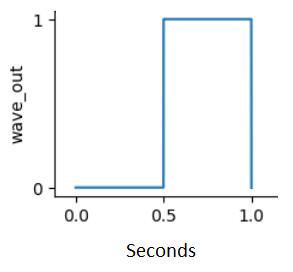
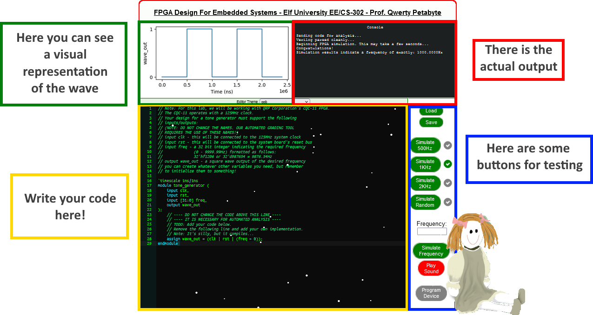

FPGA Programming - Challenge¶
Write your first FPGA program to make a doll sing.
The Theory¶
Let’s begin with a bit of theory
Square Wave: periodic waveform in which the amplitude alternates at a steady frequency between fixed minimum and maximum values (in this case 0,1)
The Frequency is given by how many waves pass or are equal to a fixed point (In our case, 1) per 1 second.
So, ONE wave in ONE second is equal to 1Hz
Hertz (Hz) = NumberOfWaves / NumberOfSeconds
Some examples
10 Waves in 5s -> 2Hz (2 waves/second)
50 Waves in 5s -> 10Hz (10 waves/second)
7.5 waves in 15s -> 0.5Hz (0.5 waves/second -> 1 wave every 2 seconds)
Warning
A single square wave consists of a LOW part (0) and an HIGH part (1).

This is 1Hz
So, to simulate 1KHz or 1000Hz we need a thousand things like this one, in one second.
The Interface¶

To complete this challenge, we have to write a code in Verilog, an Hardware Description Language used to model electronic system (Learn more). We are using Verilog 2005.
The program needs to generate a square wave at 500Hz, 1000Hz, 2000Hz and at a random frequency.
Coding¶
Let’s begin with the code.
This section is already provided by the simulation, and we shouldn’t change it.
module tone_generator (
input clk,
input rst,
input [31:0] freq,
output wave_out
);
There is a 125Mhz clock in this board.
We start by defining half of the maximum clock value, because the wave is high only for 50% of the time.
125000000==> Wave HIGH for a second (and so LOW for a second) ==> 2 seconds ==> 0.5Hz
62500000==> Wave HIGH for 0.5s (and LOW for another 0.5s) ==> 1 second ==> 1Hz
//We only need half of the total clock value. Our wave is HIGH for 1/2 of the time.
reg [31:0] maxclock = (125000000/2);
We divide freq by 100 because it is given to as an integer (ex. 50050), while it is actually a float (ex. 500.50).
We then divide maxclock by it to get the intermediate value we compare to counter to get the final frequency.
reg [31:0] eq_freq = (maxclock/(freq/100));
And now comes the tricky part.
This is an instruction which happens every unit of clock while it is positive (posedge). So, it should theorically happen 62500000 times per second.
Let’s initialize counter to -2.
Uhm… -2? Why exactly -2? More on that later (?).
In the loop we then put an if condition. If counter == eq_freq we set counter to 1, else we add 1 to counter.
Why do we initialize counter to -2, and why do we set counter to 1 if the condition is True…That’s a good question. We don’t actually know.
It works in range -2 to -501. This seems to compensate the small “imprecision” the code normally has and outputs.
We got these values after several attempts to fix the output..but unfortunately, with limited ability to debug the code, we can’t justify that..it’s a mystery still today!
//Initialize 'counter'
reg [31:0] counter = -2;
//Loop
always @(posedge clk) if(counter==eq_freq) counter<=+1; else counter <= counter+1;
Now it’s time to process the output.
Initialize the speaker variable (bool), which reverses if counter == eq_freq.
Then we assign speaker to wave_out, our output device. OR rst is there to let code to compile. It’s a little trick.
endmodule is the ending of the code.
reg speaker; //Initialize 'speaker'
always @(posedge clk) if(counter==eq_freq) speaker <= ~speaker; //Loop
assign wave_out = (speaker | rst); //Output
endmodule
And here we go. The challenge is done.
This is the full code.
module tone_generator (
input clk,
input rst,
input [31:0] freq,
output wave_out
);
//We only need half of the total clock value. Our wave is HIGH for 1/2 of the time.
reg [31:0] maxclock = (125000000/2);
//We divide freq by 100 because it is given to as as an integer (ex. 50050), while it is actually a float (ex. 500.5)
//We then divide maxclock by it to get the intermediate value we compare to counter to get the final frequency.
reg [31:0] eq_freq = (maxclock/(freq/100));
//TODO: Initialize counter to -2; Why?...that's a good question. After several attempts, we found out it works. That's it. (Works in range -501, -2)
reg [31:0] counter = -2;
always @(negedge clk) if(counter==eq_freq) counter<=+1; else counter <= counter+1;
reg speaker;
always @(negedge clk) if(counter==eq_freq) speaker <= ~speaker;
assign wave_out = (speaker | rst);
endmodule
This is the end. Thank you very much for reading our report, and see you next year! Bye!